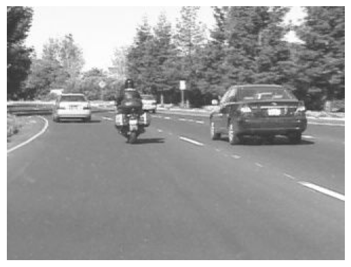
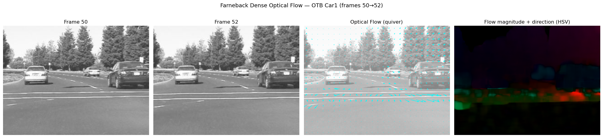
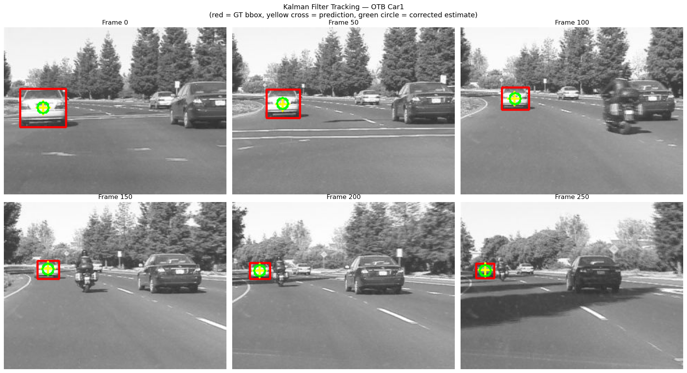
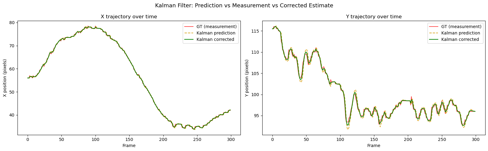
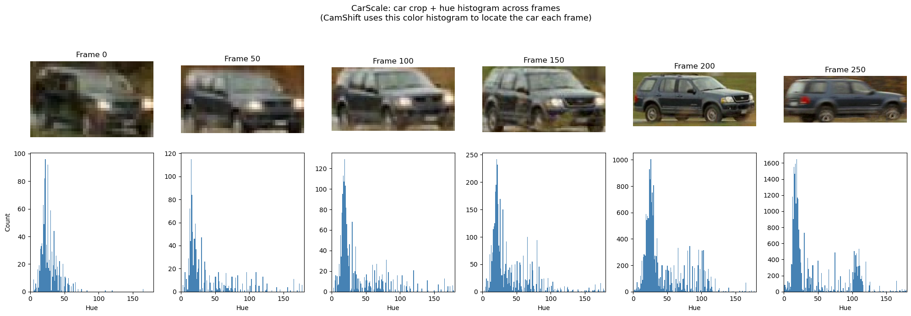

Camera motion: ego-motion (the camera moves) vs object motion
Scale changes: objects approach or recede from the camera
Crowded scenes: many similar-looking objects in close proximity
Lecture Roadmap
Foundations: Optical flow, Kalman filtering, and assignment with Hungarian matching.
Tracking-by-detection baselines: SORT and DeepSORT.
Association improvements: ByteTrack and why matching strategy matters.
Bridge to modern systems: Joint and hybrid tracking methods.
End-to-end transformers: MOTR query design, QIM, and workflow.
Evaluation + deployment: metrics, benchmarks, failure modes, and tracker selection.
Datasets
Aspect
SOT
MOT
Input
One bbox
Many detections
Core problem
Localization
Identity association
Benchmark
OTB, LaSOT, VOT
MOTChallenge
Metrics
IoU, precision
MOTA, ID switches
We will use a few sequences from the OTB (Object Tracking Benchmark) throughout this lecture. Each sequence is a folder of numbered frames (img/*.jpg) plus a groundtruth_rect.txt file with one bounding box per frame.
Sequence
Challenge
Good demo for
Car1
Illumination, scale
Baseline tracker, optical flow
CarScale
Large scale change
Kalman filter limits, adaptive trackers
David
Illumination change, pose
Mean-shift, Siamese trackers
Jumping
Fast motion, motion blur
Failure analysis, comparing trackers
Code
%%bashBASE_URL="https://web.archive.org/web/http://cvlab.hanyang.ac.kr/tracker_benchmark/seq"DATA_DIR="$HOME/data/OTB"SEQUENCES="Car1 CarScale David Jumping"mkdir -p "$DATA_DIR"for SEQ in $SEQUENCES; doif [ -d "$DATA_DIR/$SEQ" ]; then echo "$SEQ already exists, skipping"continue fi echo "Downloading $SEQ..." curl -fSL "$BASE_URL/$SEQ.zip"-o "$DATA_DIR/$SEQ.zip"2>/dev/nullif!file"$DATA_DIR/$SEQ.zip"| grep -q "Zip archive"; then echo " FAILED: $SEQ.zip is not a valid zip, skipping" rm -f "$DATA_DIR/$SEQ.zip"continue fi unzip -qo "$DATA_DIR/$SEQ.zip"-d "$DATA_DIR"-x "__MACOSX/*" rm "$DATA_DIR/$SEQ.zip" echo " $SEQ: $(ls "$DATA_DIR/$SEQ/img" | wc -l) frames"donerm -rf "$DATA_DIR/__MACOSX"2>/dev/nullecho ""echo "Done! Sequences saved to $DATA_DIR"ls "$DATA_DIR"
Downloading Car1...
Car1: 1020 frames
Downloading CarScale...
caution: excluded filename not matched: __MACOSX/*
CarScale: 253 frames
Downloading David...
caution: excluded filename not matched: __MACOSX/*
David: 770 frames
Downloading Jumping...
caution: excluded filename not matched: __MACOSX/*
Jumping: 313 frames
Done! Sequences saved to /home/ben/data/OTB
Car1
CarScale
David
Jumping
Code
# Read in the OTB dataset and play frames with gif playerfrom pathlib import Pathimport reimport cv2import numpy as npimport matplotlib.pyplot as plt# Define the path to the OTB datasetotb_path = Path("/home/ben/data/OTB")# Get car sequence pathcar_seq = [path for path in otb_path.iterdir() if path.name =="Car1"][0]# Load frames in sorted orderframe_paths =sorted((car_seq /"img").glob("*.jpg"))# Load ground truth (handles both comma and tab delimiters)lines = (car_seq /"groundtruth_rect.txt").read_text().strip().split("\n")gt = np.array([[float(x) for x in re.split(r'[,\t\s]+', line)] for line in lines])# Save the car sequence framesframes = []# Draw bounding boxesframes = []for i, frame_path inenumerate(frame_paths): frame = cv2.imread(str(frame_path)) x, y, w, h = gt[i].astype(int) cv2.rectangle(frame, (x, y), (x + w, y + h), (0, 0, 255), 2) frames.append(cv2.cvtColor(frame, cv2.COLOR_BGR2RGB))# Show a few samplesfig, axes = plt.subplots(2, 5, figsize=(18, 7))for ax, idx inzip(axes.flat, np.linspace(0, len(frames)-1, 10, dtype=int)): ax.imshow(frames[idx]) ax.set_title(f"Frame {idx}") ax.axis("off")plt.tight_layout()plt.show()
Code
# Plot the first 8 framesfrom pathlib import Pathimport reimport cv2import numpy as npimport matplotlib.pyplot as plt# Define the path to the OTB datasetotb_path = Path("/home/ben/data/OTB")# Get car sequence pathcar_seq = [path for path in otb_path.iterdir() if path.name =="Car1"][0]# Load frames in sorted orderframe_paths =sorted((car_seq /"img").glob("*.jpg"))# Load ground truth (handles both comma and tab delimiters)lines = (car_seq /"groundtruth_rect.txt").read_text().strip().split("\n")gt = np.array([[float(x) for x in re.split(r'[,\t\s]+', line)] for line in lines])# Save the car sequence framesframes = []# Draw bounding boxesframes = []for i, frame_path inenumerate(frame_paths): frame = cv2.imread(str(frame_path)) x, y, w, h = gt[i].astype(int)# cv2.rectangle(frame, (x, y), (x + w, y + h), (0, 0, 255), 2) frames.append(cv2.cvtColor(frame, cv2.COLOR_BGR2RGB))# # Show a few samples# fig, axes = plt.subplots(2, 5, figsize=(18, 7))# for ax, idx in zip(axes.flat, np.linspace(0, len(frames)-1, 10, dtype=int)):# ax.imshow(frames[idx])# ax.set_title(f"Frame {idx}")# ax.axis("off")# plt.tight_layout()# plt.show()# Plot a single framefig, ax = plt.subplots()ax.imshow(frames[150])ax.axis("off")plt.show()

Benchmarks: MOT17 & DanceTrack
MOT17 is the classic crowded pedestrian tracking benchmark (street/city surveillance style scenes).
It stresses missed detections, false positives, ID switches, and robustness in realistic camera viewpoints.
DanceTrack uses highly dynamic motion with many similar-looking people, making appearance-only matching harder.
It is especially useful for testing motion modeling and long-term identity consistency under frequent interactions.
Reporting both benchmarks gives a more balanced view: MOT17 for general MOT robustness, DanceTrack for association difficulty.
Classical Tracking Foundations
Optical Flow
Estimates per-pixel motion between consecutive frames
For each pixel, compute the displacement vector (dx, dy) that maps it from frame t to frame t+1
Useful as a motion cue for tracking, but not a complete tracker by itself
Optical Flow: Brightness Constancy
Goal of optical flow: given two consecutive video frames, compute a motion vector (dx, dy) for each pixel: where did this pixel move?
The fundamental assumption that makes this possible is brightness constancy:
I(x, y, t) = I(x + dx, y + dy, t + dt)
I(x, y, t): the pixel intensity (brightness) at position (x, y) in frame t
(dx, dy): the displacement of that pixel between frame t and frame t + dt
The equation says: a pixel’s brightness does not change when it moves, only its position changes
By taking a first-order Taylor expansion of the right side and simplifying, we get the optical flow constraint equation:
I_x \cdot u + I_y \cdot v + I_t = 0
I_x, I_y: spatial image gradients (how brightness changes across the image in x and y)
I_t: temporal gradient (how brightness changes between frames at the same location)
(u, v): the optical flow vector we want to solve for (horizontal and vertical velocity of the pixel)
The equation above says: “the brightness I lost because the object slid away must equal the brightness I gained from whatever slid in.” We can estimate I_x, I_y, and I_t from image data, then solve for motion under additional assumptions.
This is one equation with two unknowns(u, v), so it cannot be solved for a single pixel alone. Different methods handle this differently:
Optical Flow Methods
Lucas-Kanade (sparse): assumes all pixels in a small neighborhood share the same flow (u, v). This gives enough equations to solve the system. Only computes flow at selected keypoints - fast.
Farneback (dense): fits a polynomial to the local neighborhood in each frame, then estimates flow from how the polynomial coefficients change. Computes flow for every pixel - slower but gives a complete motion field.
Limitations: brightness constancy is an approximation. It breaks down under lighting changes, reflections, shadows, transparent objects, and large displacements (where the Taylor approximation is inaccurate).
Optical Flow Demo
Code
import cv2import numpy as npimport matplotlib.pyplot as pltfrom pathlib import Pathcar_seq = Path.home() /"data"/"OTB"/"Car1"/"img"frame_paths =sorted(car_seq.glob("*.jpg"))# Pick two frames a few apart so the motion is visibleidx_a, idx_b =50, 52gray1 = cv2.imread(str(frame_paths[idx_a]), cv2.IMREAD_GRAYSCALE)gray2 = cv2.imread(str(frame_paths[idx_b]), cv2.IMREAD_GRAYSCALE)color1 = cv2.cvtColor(cv2.imread(str(frame_paths[idx_a])), cv2.COLOR_BGR2RGB)flow = cv2.calcOpticalFlowFarneback( gray1, gray2, None, pyr_scale=0.5, levels=3, winsize=15, iterations=3, poly_n=5, poly_sigma=1.2, flags=0)# Flow magnitude + angle for the HSV visualizationmag, ang = cv2.cartToPolar(flow[..., 0], flow[..., 1])hsv = np.zeros((*gray1.shape, 3), dtype=np.uint8)hsv[..., 0] = ang *180/ np.pi /2# hue = directionhsv[..., 1] =255# full saturationhsv[..., 2] = cv2.normalize(mag, None, 0, 255, cv2.NORM_MINMAX) # brightness = speedflow_rgb = cv2.cvtColor(hsv, cv2.COLOR_HSV2RGB)fig, axes = plt.subplots(1, 4, figsize=(20, 5))axes[0].imshow(color1)axes[0].set_title(f'Frame {idx_a}')axes[1].imshow(cv2.cvtColor(cv2.imread(str(frame_paths[idx_b])), cv2.COLOR_BGR2RGB))axes[1].set_title(f'Frame {idx_b}')# Quiver plotstep =12h, w = gray1.shapey_grid, x_grid = np.mgrid[step//2:h:step, step//2:w:step]axes[2].imshow(color1, alpha=0.6)axes[2].quiver( x_grid, y_grid, flow[step//2::step, step//2::step, 0],-flow[step//2::step, step//2::step, 1], color='cyan', scale=150, width=0.003)axes[2].set_title('Optical Flow (quiver)')# HSV visualizationaxes[3].imshow(flow_rgb)axes[3].set_title('Flow magnitude + direction (HSV)')for ax in axes: ax.axis('off')plt.suptitle(f'Farneback Dense Optical Flow — OTB Car1 (frames {idx_a}→{idx_b})', fontsize=13)plt.tight_layout()plt.show()

Tracking with Sparse Optical Flow (Lucas-Kanade)
We know where the car is in frame 0 (from the ground truth bounding box). We can:
Detect good features (corners) inside that bounding box
Track those keypoints frame-to-frame using Lucas-Kanade (cv2.calcOpticalFlowPyrLK)
Draw their trajectories to visualize the car’s path
This is a real classical tracker - no deep learning, just pixel motion.
Code
import cv2import reimport numpy as npimport matplotlib.pyplot as pltfrom pathlib import Pathseq_dir = Path.home() /"data"/"OTB"/"Car1"frame_paths =sorted((seq_dir /"img").glob("*.jpg"))# Load ground truth (handles comma / tab / space delimiters)lines = (seq_dir /"groundtruth_rect.txt").read_text().strip().split("\n")gt = np.array([[float(x) for x in re.split(r'[,\t\s]+', line)] for line in lines])# Read first frame and get the car's bounding boxfirst_gray = cv2.imread(str(frame_paths[0]), cv2.IMREAD_GRAYSCALE)x0, y0, w0, h0 = gt[0].astype(int)# Create a mask so goodFeaturesToTrack only looks inside the bounding boxmask = np.zeros_like(first_gray)mask[y0:y0+h0, x0:x0+w0] =255# Detect corners inside the car's bounding boxkeypoints = cv2.goodFeaturesToTrack( first_gray, maxCorners=50, qualityLevel=0.05, minDistance=5, mask=mask)print(f"Found {len(keypoints)} keypoints inside the car bbox")# Lucas-Kanade parameterslk_params =dict( winSize=(15, 15), maxLevel=2, criteria=(cv2.TERM_CRITERIA_EPS | cv2.TERM_CRITERIA_COUNT, 10, 0.03))# Track across framesn_frames =min(len(frame_paths), 200)trajectories = {i: [tuple(keypoints[i][0])] for i inrange(len(keypoints))}prev_gray = first_grayprev_pts = keypoints.copy()for f_idx inrange(1, n_frames): curr_gray = cv2.imread(str(frame_paths[f_idx]), cv2.IMREAD_GRAYSCALE) next_pts, status, _ = cv2.calcOpticalFlowPyrLK( prev_gray, curr_gray, prev_pts, None, **lk_params )for i inrange(len(status)):if status[i]: trajectories.setdefault(i, []).append(tuple(next_pts[i][0])) good_mask = status.flatten() ==1 prev_pts = next_pts[good_mask].reshape(-1, 1, 2) prev_gray = curr_gray# Visualize: show a few frames with tracked points + trailssample_frames = [0, 30, 60, 100, 150, 199]sample_frames = [f for f in sample_frames if f < n_frames]fig, axes = plt.subplots(2, 3, figsize=(18, 10))for ax, f_idx inzip(axes.flat, sample_frames): frame = cv2.cvtColor(cv2.imread(str(frame_paths[f_idx])), cv2.COLOR_BGR2RGB)# Draw gt bbox bx, by, bw, bh = gt[f_idx].astype(int) cv2.rectangle(frame, (bx, by), (bx+bw, by+bh), (255, 0, 0), 2)# Draw current keypoint positions only (no trails)for tid, trail in trajectories.items():if f_idx <len(trail): pt =tuple(map(int, trail[f_idx])) cv2.circle(frame, pt, 4, (0, 255, 255), -1) ax.imshow(frame) ax.set_title(f"Frame {f_idx}") ax.axis("off")plt.suptitle("Lucas-Kanade Optical Flow Tracking — OTB Car1\n(red = GT bbox, cyan = tracked keypoints)", fontsize=13)plt.tight_layout()plt.show()print(f"Tracked {len(trajectories)} keypoints across {n_frames} frames")
Found 30 keypoints inside the car bbox
Tracked 30 keypoints across 200 frames
Kalman Filter
The Kalman filter is a recursive algorithm that estimates the state of a moving object from noisy observations.
State vector: \mathbf{x} = [x, y, v_x, v_y] - position and velocity
\hat{\mathbf{x}}: predicted state estimate before seeing the new measurement
Two-step loop:
Predict: propagate the state forward using a motion model (constant velocity)
“Where do I expect this object to be next frame?”
Update: correct the prediction when a new detection arrives
“How do I reconcile my prediction with what I actually detected?”
Handles noise and brief occlusions gracefully (during occlusion, just keep predicting).
Limitations: assumes linear motion and Gaussian noise — real objects don’t always cooperate.
Kalman Filter: Predict-Correct Loop
F: state transition matrix (motion model)
B: control matrix
u: control input (often omitted/0 in basic MOT tracking)
z: measurement (detected position)
H: measurement matrix (maps state to measurement space)
K: Kalman gain (how much to trust measurement vs prediction)
Code
flowchart TD A["<b>Predict</b><br/>Use motion model to estimate next state<br/><i>x̂ = F · x + B · u</i>"] --> B{"New detection<br/>available?"} B -- Yes --> C["<b>Update</b><br/>Correct state with measurement<br/><i>x = x̂ + K · (z - H · x̂)</i>"] B -- "No (occluded)" --> D["<b>Coast</b><br/>Keep prediction as-is<br/><i>x = x̂</i>"] C --> E["Next frame"] D --> E E --> A style A fill:#4a90d9,color:#fff,stroke:#2c5f8a style B fill:#f5a623,color:#fff,stroke:#c47d12 style C fill:#7ed321,color:#fff,stroke:#5a9a18 style D fill:#d0021b,color:#fff,stroke:#9b0114 style E fill:#9b9b9b,color:#fff,stroke:#6b6b6b
flowchart TD
A["<b>Predict</b><br/>Use motion model to estimate next state<br/><i>x̂ = F · x + B · u</i>"] --> B{"New detection<br/>available?"}
B -- Yes --> C["<b>Update</b><br/>Correct state with measurement<br/><i>x = x̂ + K · (z - H · x̂)</i>"]
B -- "No (occluded)" --> D["<b>Coast</b><br/>Keep prediction as-is<br/><i>x = x̂</i>"]
C --> E["Next frame"]
D --> E
E --> A
style A fill:#4a90d9,color:#fff,stroke:#2c5f8a
style B fill:#f5a623,color:#fff,stroke:#c47d12
style C fill:#7ed321,color:#fff,stroke:#5a9a18
style D fill:#d0021b,color:#fff,stroke:#9b0114
style E fill:#9b9b9b,color:#fff,stroke:#6b6b6b
The filter balances trust in the motion model vs trust in the measurement, weighted by their respective uncertainties (the Kalman gainK).
Predict: the motion model guesses the next state (position, velocity): “where should the car be now?”
Update: if a detection arrives, blend the prediction with the measurement: “ok, I predicted here, but I detected there, so the truth is somewhere in between”
Coast: if no detection (occlusion), just trust the prediction: “I can’t see it, but it was probably still moving the same way”
Kalman Filter Tracking Demo (OTB Car1)
We use cv2.KalmanFilter to track the car. The idea:
Initialize the Kalman state with the ground-truth bbox center from frame 0
Each frame, predict where the car should be
Simulate a detector by using the ground-truth bbox as the “measurement” (in a real system this would come from YOLO, Faster R-CNN, etc.)
Correct the Kalman state with the measurement
Compare the prediction (before correction) vs the measurement vs the corrected estimate
Code
import cv2import reimport numpy as npimport matplotlib.pyplot as pltfrom pathlib import Pathseq_dir = Path.home() /"data"/"OTB"/"Car1"frame_paths =sorted((seq_dir /"img").glob("*.jpg"))lines = (seq_dir /"groundtruth_rect.txt").read_text().strip().split("\n")gt = np.array([[float(x) for x in re.split(r'[,\t\s]+', line)] for line in lines])# --- Set up Kalman Filter (4 state vars: x, y, vx, vy; 2 measurements: x, y) ---kf = cv2.KalmanFilter(4, 2)kf.measurementMatrix = np.array([[1, 0, 0, 0], [0, 1, 0, 0]], np.float32)kf.transitionMatrix = np.array([[1, 0, 1, 0], [0, 1, 0, 1], [0, 0, 1, 0], [0, 0, 0, 1]], np.float32)kf.processNoiseCov = np.eye(4, dtype=np.float32) *1e-2kf.measurementNoiseCov = np.eye(2, dtype=np.float32) *1e-1# Initialize with the center of the first GT bboxx0, y0, w0, h0 = gt[0]cx0, cy0 = x0 + w0 /2, y0 + h0 /2kf.statePre = np.array([[cx0], [cy0], [0], [0]], np.float32)kf.statePost = np.array([[cx0], [cy0], [0], [0]], np.float32)n_frames =min(len(frame_paths), 300)predictions = []corrected = []gt_centers = []for i inrange(n_frames): pred = kf.predict() predictions.append((float(pred[0, 0]), float(pred[1, 0])))# Use GT bbox center as the "detection" (measurement) x, y, w, h = gt[i] cx, cy = x + w /2, y + h /2 gt_centers.append((cx, cy)) measurement = np.array([[np.float32(cx)], [np.float32(cy)]]) corrected_state = kf.correct(measurement) corrected.append((float(corrected_state[0, 0]), float(corrected_state[1, 0])))predictions = np.array(predictions)corrected = np.array(corrected)gt_centers = np.array(gt_centers)# --- Visualize on sampled frames ---sample_frames = [0, 50, 100, 150, 200, 250]sample_frames = [f for f in sample_frames if f < n_frames]fig, axes = plt.subplots(2, 3, figsize=(18, 10))for ax, f_idx inzip(axes.flat, sample_frames): frame = cv2.cvtColor(cv2.imread(str(frame_paths[f_idx])), cv2.COLOR_BGR2RGB) bx, by, bw, bh = gt[f_idx].astype(int) cv2.rectangle(frame, (bx, by), (bx+bw, by+bh), (255, 0, 0), 2) px, py = predictions[f_idx].astype(int) cv2.drawMarker(frame, (px, py), (255, 255, 0), cv2.MARKER_CROSS, 20, 2) ex, ey = corrected[f_idx].astype(int) cv2.circle(frame, (ex, ey), 8, (0, 255, 0), 2) ax.imshow(frame) ax.set_title(f"Frame {f_idx}") ax.axis("off")plt.suptitle("Kalman Filter Tracking — OTB Car1\n(red = GT bbox, yellow cross = prediction, green circle = corrected estimate)", fontsize=13)plt.tight_layout()plt.show()

Code
fig, axes = plt.subplots(1, 2, figsize=(16, 5))axes[0].plot(gt_centers[:, 0], label="GT (measurement)", color="red", alpha=0.7)axes[0].plot(predictions[:, 0], label="Kalman prediction", color="goldenrod", linestyle="--")axes[0].plot(corrected[:, 0], label="Kalman corrected", color="green")axes[0].set_xlabel("Frame")axes[0].set_ylabel("X position (pixels)")axes[0].set_title("X trajectory over time")axes[0].legend()axes[1].plot(gt_centers[:, 1], label="GT (measurement)", color="red", alpha=0.7)axes[1].plot(predictions[:, 1], label="Kalman prediction", color="goldenrod", linestyle="--")axes[1].plot(corrected[:, 1], label="Kalman corrected", color="green")axes[1].set_xlabel("Frame")axes[1].set_ylabel("Y position (pixels)")axes[1].set_title("Y trajectory over time")axes[1].legend()plt.suptitle("Kalman Filter: Prediction vs Measurement vs Corrected Estimate", fontsize=13)plt.tight_layout()plt.show()

Mean-Shift / CAMShift
Track an object by its color histogram distribution
Mean-shift: iteratively finds the mode (densest region) of the color distribution in a search window
CAMShift (Continuously Adaptive Mean-Shift): adapts the window size to the target’s scale
Strengths: very fast, no learning required
Weaknesses: fragile under appearance changes, background clutter, and when multiple objects share similar colors
What Does the Car “Look Like” to a Histogram Tracker?
Mean-shift and CamShift track objects by their color distribution. Below we crop the car from the CarScale sequence (a true color video) and plot its hue histogram at several frames. If the histogram stays stable, CamShift will track well. If lighting or scale changes cause the distribution to shift, tracking degrades.
Code
import cv2import reimport numpy as npimport matplotlib.pyplot as pltfrom pathlib import Pathseq_dir = Path.home() /"data"/"OTB"/"CarScale"frame_paths =sorted((seq_dir /"img").glob("*.jpg"))lines = (seq_dir /"groundtruth_rect.txt").read_text().strip().split("\n")gt = np.array([[float(x) for x in re.split(r'[,\t\s]+', line)] for line in lines])sample_frames = [0, 50, 100, 150, 200, 250]sample_frames = [f for f in sample_frames if f <len(frame_paths)]fig, axes = plt.subplots(2, len(sample_frames), figsize=(20, 7))for col, f_idx inenumerate(sample_frames): frame = cv2.imread(str(frame_paths[f_idx])) hsv = cv2.cvtColor(frame, cv2.COLOR_BGR2HSV) x, y, w, h = gt[f_idx].astype(int) roi_bgr = frame[y:y+h, x:x+w] roi_hsv = hsv[y:y+h, x:x+w] axes[0, col].imshow(cv2.cvtColor(roi_bgr, cv2.COLOR_BGR2RGB)) axes[0, col].set_title(f"Frame {f_idx}") axes[0, col].axis("off") hist = cv2.calcHist([roi_hsv], [0], None, [180], [0, 180]) axes[1, col].bar(range(180), hist.flatten(), color="steelblue", width=1) axes[1, col].set_xlim(0, 180) axes[1, col].set_xlabel("Hue") axes[1, col].set_ylabel("Count"if col ==0else"")plt.suptitle("CarScale: car crop + hue histogram across frames\n(CamShift uses this color histogram to locate the car each frame)", fontsize=13)plt.tight_layout()plt.show()

Code
# # Show what CamShift "sees": the back-projection (histogram matching)# fig, axes = plt.subplots(1, 3, figsize=(18, 5))# for ax, f_idx in zip(axes.flat, [0, 100, 200]):# if f_idx >= n_frames:# continue# frame = cv2.imread(str(frame_paths[f_idx]))# hsv = cv2.cvtColor(frame, cv2.COLOR_BGR2HSV)# back_proj = cv2.calcBackProject([hsv], [0], roi_hist, [0, 180], 1)# ax.imshow(back_proj, cmap="hot")# ax.set_title(f"Back-projection — Frame {f_idx}")# ax.axis("off")# plt.suptitle("CamShift Back-Projection: bright = pixels matching the car's hue histogram", fontsize=13)# plt.tight_layout()# plt.show()
SOT
Overview
Input: first-frame target box + video frames.
Output: one target trajectory over time.
Best for scenarios like drone follow mode, player/camera lock, and AR target tracking.
Key limitation for this lecture: SOT does not solve multi-object identity association (the core MOT problem).
SiamFC: Template Matching via Cross-Correlation
Bertinetto et al., 2016
Core idea: track a single object by matching a template to a search region.
Frame 1: crop the target -> extract features with a CNN -> this is the template
Frame t: extract a larger search region around the last known location -> extract features
Cross-correlate template features with search features -> produces a similarity heatmap
Peak of the heatmap = predicted target location
The two CNN branches share weights (hence Siamese) - the network learns a general similarity function.
Strengths: fast, simple, no online training needed.
Limitations: single-object only; no online model update in the basic form -> can drift on long sequences.
Modern extensions: SiamRPN (adds bounding box regression), SiamMask (adds segmentation).
Bridge to MOT: SOT answers “where is this one object?” while MOT must also answer “which object identity is which across many objects?”
Modern MOT Landscape
Type
Best At
Limitation
Typical Use
Tracking-by-Detection
Strong practical accuracy
ID switches in occlusion
Production
Joint (JDE)
Efficiency
Detection/Re-ID conflict
Transitional
Hybrid
Better association quality
Added modeling complexity
Emerging
End-to-End (MOTR)
Unified sequence modeling
Harder training/compute
Research
Tracking-by-Detection (Dominant Baseline Family)
Detect every frame, then associate detections across time; strongest practical baseline in most real systems.
Aspect
Details
Core Idea
Detect objects every frame, then associate across time
Pipeline
Detector -> Matching (IoU/ReID) -> Track update
Models
ByteTrack, BoT-SORT, OC-SORT
Strengths
Strong performance, modular, easy to tune
Weaknesses
Identity switches under occlusion / similar appearance
Why it works
Modern detectors are extremely strong
Joint Detection + Embedding (JDE Bridge)
One network predicts both boxes and identity embeddings, but detection and Re-ID objectives can compete.
Aspect
Details
Core Idea
Single network outputs both detections and identity embeddings
Instead of building a tracker from scratch, leverage the strength of modern detectors:
Frame_t → Detector → Bounding Boxes → Association → Tracks
Run a detector (Faster R-CNN, YOLO, etc.) on every frame independently
Associate detections across frames to form tracks
This decouples “what is there?” from “who is who?”
Why this dominates today:
Detectors are already very good, no need to reinvent that wheel
Modular: swap detectors or association methods independently
Scales naturally to many objects
The Association Problem
Given N detections in frame t and M existing tracks from frame t-1, find the best assignment.
This is a bipartite matching problem:
Each detection should be assigned to at most one track
Each track should be assigned to at most one detection
Some detections may be new objects (start a new track)
Some tracks may have no matching detection (object is occluded or left the frame)
Matching cues:
Motion: predicted position from Kalman filter vs detection position
Appearance: visual similarity (embeddings)
Geometry: bounding box size and aspect ratio
Hungarian Algorithm
The Hungarian algorithm solves the assignment problem: given M workers and N jobs, each with a cost, find the one-to-one assignment that minimizes total cost.
Steps:
Build a cost matrixC where C_{i,j} = cost of assigning worker i to job j
Row reduction: subtract each row’s minimum from that row
Column reduction: subtract each column’s minimum from that column
Try to assign one zero per row/column. If not possible, adjust the matrix and repeat.
Result: the globally optimal one-to-one assignment in O(n^3) time
from scipy.optimize import linear_sum_assignmentrow_ind, col_ind = linear_sum_assignment(cost_matrix)
Hungarian Algorithm for Tracking
Where do the two sets of boxes come from?
No ground truth is involved at runtime. The IoU is computed between two sets of boxes that the system generates itself:
Rows (tracks): each existing track has a Kalman filter that predicts a bounding box for the current frame - “where I expect this object to be now”
Columns (detections): a detector (YOLO, Faster R-CNN, etc.) runs on the current frame and outputs bounding boxes - “what I actually see right now”
Source
Box
Bbox (x, y, w, h)
Kalman predict
Track 0
(120, 80, 60, 45)
Kalman predict
Track 1
(300, 150, 50, 40)
Kalman predict
Track 2
(50, 200, 40, 35)
YOLO detector
Det 0
(125, 82, 58, 44)
YOLO detector
Det 1
(305, 148, 52, 42)
YOLO detector
Det 2
(48, 198, 42, 37)
YOLO detector
Det 3
(500, 100, 30, 30)
Code
flowchart LR A["Kalman predictions<br/>(3 track boxes)"] --> C["Compute IoU<br/>between all pairs"] B["YOLO detections<br/>(4 detection boxes)"] --> C C --> D["Cost matrix<br/>C = 1 − IoU"] D --> E["Hungarian<br/>Algorithm"] E --> F["Track–detection<br/>assignments"] style A fill:#4a90d9,color:#fff,stroke:#2c5f8a style B fill:#f5a623,color:#fff,stroke:#c47d12 style C fill:#9b59b6,color:#fff,stroke:#6c3483 style D fill:#9b59b6,color:#fff,stroke:#6c3483 style E fill:#7ed321,color:#fff,stroke:#5a9a18 style F fill:#9b9b9b,color:#fff,stroke:#6b6b6b
flowchart LR
A["Kalman predictions<br/>(3 track boxes)"] --> C["Compute IoU<br/>between all pairs"]
B["YOLO detections<br/>(4 detection boxes)"] --> C
C --> D["Cost matrix<br/>C = 1 − IoU"]
D --> E["Hungarian<br/>Algorithm"]
E --> F["Track–detection<br/>assignments"]
style A fill:#4a90d9,color:#fff,stroke:#2c5f8a
style B fill:#f5a623,color:#fff,stroke:#c47d12
style C fill:#9b59b6,color:#fff,stroke:#6c3483
style D fill:#9b59b6,color:#fff,stroke:#6c3483
style E fill:#7ed321,color:#fff,stroke:#5a9a18
style F fill:#9b9b9b,color:#fff,stroke:#6b6b6b
Building and solving the cost matrix
Compute IoU between every predicted track box and every detection box:
SORT is not a detector, it’s the glue that turns per-frame detections into consistent tracks over time. It takes any off-the-shelf detector (YOLO, Faster R-CNN, etc.) as input and adds two things on top:
A Kalman filter per track: to predict where each object will be in the next frame
The Hungarian algorithm: to match those predictions to new detections
The Hungarian algorithm alone only solves one frame’s assignment. SORT wraps it in a loop with memory: it maintains track states across frames, predicts forward, and manages track creation/deletion.
The loop (every frame)
Detect: run an external detector on frame t → get bounding boxes
Predict: each existing track’s Kalman filter predicts its bbox for frame t
Associate: compute IoU between predicted boxes and detected boxes → Hungarian algorithm finds the optimal assignment
Update:
Matched tracks → Kalman correct (blend prediction with detection)
Unmatched detections → new track (object just appeared)
Unmatched tracks → age out after T_{\text{lost}} frames (object left or occluded too long)
No appearance model, SORT only uses position and motion. That’s what makes it fast (~260 FPS for the tracking part alone), but also why it fails when similar objects cross paths.
SORT: Strengths and Weaknesses
Strengths:
Very fast (~260 FPS for association alone)
Simple to implement and understand
Works well when objects move predictably and don’t overlap much
Weaknesses:
No appearance model, the tracker cannot distinguish between similar-looking objects
Lots of ID switches when objects occlude or cross paths
If two people walk past each other, their IoU-based association gets confused
This motivates DeepSORT: we need a way to tell objects apart beyond just position.
DeepSORT
The Re-ID Embedding
Wojke, Bewley, & Paulus, 2017
The key addition: a re-identification (Re-ID) network
A small CNN that takes a crop of a detected object and produces a feature embedding (a vector)
Objects that look similar have nearby embeddings in this space
Trained on re-identification datasets (e.g., Market-1501, CUHK03)
Now we can compare objects not just by where they are but by what they look like.
DeepSORT Pipeline
Detect → bounding boxes
Extract appearance → run each detection crop through the Re-ID CNN → feature embedding
Predict → Kalman predict for each existing track
Associate → cascaded matching using both motion and appearance costs
Transformer-style association (what attends to what)
Build detection tokens from D.
Use track tokens from T as queries.
Track queries do cross-attention over detection tokens: \mathrm{Attn}(Q=T, K=D, V=D)
Output updated track representations T'.
Compute pairwise scores S \in \mathbb{R}^{N_t \times N_d} with an MLP or dot-product head.
Outputs
Match score matrix S (higher = more likely same identity)
Optional “no-match” score per track
Final assignment after Hungarian/greedy matching
Toy shapes: if N_t=12 and N_d=15, then S is a 12 \times 15 matrix.
Attention block (what attends to what):
Code
flowchart TD T["Track Features T<br/>Nt x d"] --> QT["Track Tokens (Q)"] D["Detection Features D<br/>Nd x d"] --> KVD["Detection Tokens (K,V)"] QT --> CA["Cross-Attention<br/>Attn(Q=T, K=D, V=D)"] KVD --> CA CA --> Tup["Updated Track Reps T-prime"]
flowchart TD
T["Track Features T<br/>Nt x d"] --> QT["Track Tokens (Q)"]
D["Detection Features D<br/>Nd x d"] --> KVD["Detection Tokens (K,V)"]
QT --> CA["Cross-Attention<br/>Attn(Q=T, K=D, V=D)"]
KVD --> CA
CA --> Tup["Updated Track Reps T-prime"]
Overall association pipeline:
Code
flowchart TD Tup["Updated Track Reps T-prime"] --> Head["Pairwise Scoring Head<br/>MLP or dot-product"] D["Detection Features D<br/>Nd x d"] --> Head Head --> S["Score Matrix S<br/>Nt x Nd"] S --> M["Hungarian or Greedy Matching"] M --> A["Final Assignments"]
flowchart TD
Tup["Updated Track Reps T-prime"] --> Head["Pairwise Scoring Head<br/>MLP or dot-product"]
D["Detection Features D<br/>Nd x d"] --> Head
Head --> S["Score Matrix S<br/>Nt x Nd"]
S --> M["Hungarian or Greedy Matching"]
M --> A["Final Assignments"]
Transformer-based Tracking (MOTR)
Next step after hybrid
TrackFormer, MOTR: use transformer decoders where each query represents a track
Object queries persist across frames so tracking becomes sequence modeling
Attention naturally models interactions between objects (useful in occlusion-heavy scenes)
MOTR (End-to-End Multiple Object Tracking with Transformer) is a transformer-based tracker that jointly performs detection and tracking in a single forward pass.
Promising but typically more computationally expensive than lightweight production MOT pipelines.
MOTR Overview
MOTR frames multi-object tracking as an end-to-end transformer task.
A set of track queries is carried across frames so identities persist over time.
Detection and association are learned jointly, reducing hand-crafted tracking logic.
It handles interactions/occlusion well, but is usually more computationally expensive than lighter MOT pipelines.